Orthogonal polynomials¶
Legendre functions¶
legendre()¶
- mpmath.legendre(n, x)¶
legendre(n, x) evaluates the Legendre polynomial 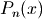. The Legendre polynomials are given by the formula
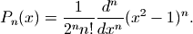
Alternatively, they can be computed recursively using
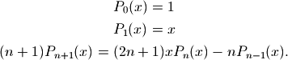
A third definition is in terms of the hypergeometric function 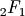, whereby they can be generalized to arbitrary
 :
: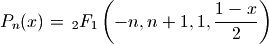
Basic evaluation
The Legendre polynomials assume fixed values at the points 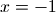 and 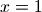:
>>> from mpmath import * >>> mp.dps = 15; mp.pretty = True >>> nprint([legendre(n, 1) for n in range(6)]) [1.0, 1.0, 1.0, 1.0, 1.0, 1.0] >>> nprint([legendre(n, -1) for n in range(6)]) [1.0, -1.0, 1.0, -1.0, 1.0, -1.0]
The coefficients of Legendre polynomials can be recovered using degree-
Taylor expansion:>>> for n in range(5): ... nprint(chop(taylor(lambda x: legendre(n, x), 0, n))) ... [1.0] [0.0, 1.0] [-0.5, 0.0, 1.5] [0.0, -1.5, 0.0, 2.5] [0.375, 0.0, -3.75, 0.0, 4.375]
The roots of Legendre polynomials are located symmetrically on the interval 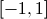:
>>> for n in range(5): ... nprint(polyroots(taylor(lambda x: legendre(n, x), 0, n)[::-1])) ... [] [0.0] [-0.57735, 0.57735] [-0.774597, 0.0, 0.774597] [-0.861136, -0.339981, 0.339981, 0.861136]
An example of an evaluation for arbitrary
:>>> legendre(0.75, 2+4j) (1.94952805264875 + 2.1071073099422j)
Orthogonality
The Legendre polynomials are orthogonal on with respect to the trivial weight 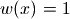. That is, 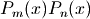 integrates to zero if 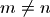 and to 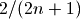 if 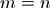:
>>> m, n = 3, 4 >>> quad(lambda x: legendre(m,x)*legendre(n,x), [-1, 1]) 0.0 >>> m, n = 4, 4 >>> quad(lambda x: legendre(m,x)*legendre(n,x), [-1, 1]) 0.222222222222222
Differential equation
The Legendre polynomials satisfy the differential equation
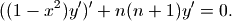
We can verify this numerically:
>>> n = 3.6 >>> x = 0.73 >>> P = legendre >>> A = diff(lambda t: (1-t**2)*diff(lambda u: P(n,u), t), x) >>> B = n*(n+1)*P(n,x) >>> nprint(A+B,1) 9.0e-16
legenp()¶
- mpmath.legenp(n, m, z)¶
Calculates the (associated) Legendre function of the first kind of degree n and order m, 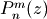. Taking 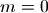 gives the ordinary Legendre function of the first kind, 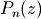. The parameters may be complex numbers.
In terms of the Gauss hypergeometric function, the (associated) Legendre function is defined as
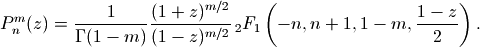
With type=3 instead of type=2, the alternative definition
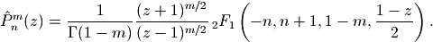
is used. These functions correspond respectively to LegendreP[n,m,2,z] and LegendreP[n,m,3,z] in Mathematica.
The general solution of the (associated) Legendre differential equation
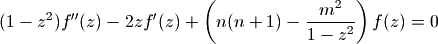
is given by 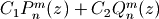 for arbitrary constants
 ,
,  , where 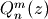 is a Legendre function of the
second kind as implemented by legenq().
, where 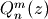 is a Legendre function of the
second kind as implemented by legenq().Examples
Evaluation for arbitrary parameters and arguments:
>>> from mpmath import * >>> mp.dps = 25; mp.pretty = True >>> legenp(2, 0, 10); legendre(2, 10) 149.5 149.5 >>> legenp(-2, 0.5, 2.5) (1.972260393822275434196053 - 1.972260393822275434196053j) >>> legenp(2+3j, 1-j, -0.5+4j) (-3.335677248386698208736542 - 5.663270217461022307645625j) >>> chop(legenp(3, 2, -1.5, type=2)) 28.125 >>> chop(legenp(3, 2, -1.5, type=3)) -28.125
Verifying the associated Legendre differential equation:
>>> n, m = 2, -0.5 >>> C1, C2 = 1, -3 >>> f = lambda z: C1*legenp(n,m,z) + C2*legenq(n,m,z) >>> deq = lambda z: (1-z**2)*diff(f,z,2) - 2*z*diff(f,z) + \ ... (n*(n+1)-m**2/(1-z**2))*f(z) >>> for z in [0, 2, -1.5, 0.5+2j]: ... chop(deq(mpmathify(z))) ... 0.0 0.0 0.0 0.0
legenq()¶
- mpmath.legenq(n, m, z, version=2)¶
Calculates the (associated) Legendre function of the second kind of degree n and order m, . Taking gives the ordinary Legendre function of the second kind, 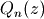. The parameters may complex numbers.
The Legendre functions of the second kind give a second set of solutions to the (associated) Legendre differential equation. (See legenp().) Unlike the Legendre functions of the first kind, they are not polynomials of
 for integer ,
for integer ,  but rational or logarithmic
functions with poles at 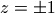.
but rational or logarithmic
functions with poles at 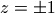.There are various ways to define Legendre functions of the second kind, giving rise to different complex structure. A version can be selected using the type keyword argument. The type=2 and type=3 functions are given respectively by
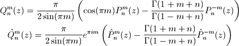
where
 and 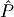 are the type=2 and type=3 Legendre functions
of the first kind. The formulas above should be understood as limits
when is an integer.
and 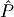 are the type=2 and type=3 Legendre functions
of the first kind. The formulas above should be understood as limits
when is an integer.These functions correspond to LegendreQ[n,m,2,z] (or LegendreQ[n,m,z]) and LegendreQ[n,m,3,z] in Mathematica. The type=3 function is essentially the same as the function defined in Abramowitz & Stegun (eq. 8.1.3) but with 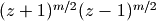 instead of 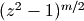, giving slightly different branches.
Examples
Evaluation for arbitrary parameters and arguments:
>>> from mpmath import * >>> mp.dps = 25; mp.pretty = True >>> legenq(2, 0, 0.5) -0.8186632680417568557122028 >>> legenq(-1.5, -2, 2.5) (0.6655964618250228714288277 + 0.3937692045497259717762649j) >>> legenq(2-j, 3+4j, -6+5j) (-10001.95256487468541686564 - 6011.691337610097577791134j)
Different versions of the function:
>>> legenq(2, 1, 0.5) 0.7298060598018049369381857 >>> legenq(2, 1, 1.5) (-7.902916572420817192300921 + 0.1998650072605976600724502j) >>> legenq(2, 1, 0.5, type=3) (2.040524284763495081918338 - 0.7298060598018049369381857j) >>> chop(legenq(2, 1, 1.5, type=3)) -0.1998650072605976600724502
Chebyshev polynomials¶
chebyt()¶
- mpmath.chebyt(n, x)¶
chebyt(n, x) evaluates the Chebyshev polynomial of the first kind 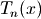, defined by the identity
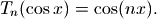
The Chebyshev polynomials of the first kind are a special case of the Jacobi polynomials, and by extension of the hypergeometric function . They can thus also be evaluated for nonintegral
.Basic evaluation
The coefficients of the
-th polynomial can be recovered
using using degree- Taylor expansion:>>> from mpmath import * >>> mp.dps = 15; mp.pretty = True >>> for n in range(5): ... nprint(chop(taylor(lambda x: chebyt(n, x), 0, n))) ... [1.0] [0.0, 1.0] [-1.0, 0.0, 2.0] [0.0, -3.0, 0.0, 4.0] [1.0, 0.0, -8.0, 0.0, 8.0]
Orthogonality
The Chebyshev polynomials of the first kind are orthogonal on the interval with respect to the weight function 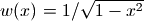:
>>> f = lambda x: chebyt(m,x)*chebyt(n,x)/sqrt(1-x**2) >>> m, n = 3, 4 >>> nprint(quad(f, [-1, 1]),1) 0.0 >>> m, n = 4, 4 >>> quad(f, [-1, 1]) 1.57079632596448
chebyu()¶
- mpmath.chebyu(n, x)¶
chebyu(n, x) evaluates the Chebyshev polynomial of the second kind 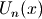, defined by the identity
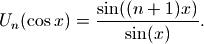
The Chebyshev polynomials of the second kind are a special case of the Jacobi polynomials, and by extension of the hypergeometric function . They can thus also be evaluated for nonintegral
.Basic evaluation
The coefficients of the
-th polynomial can be recovered
using using degree- Taylor expansion:>>> from mpmath import * >>> mp.dps = 15; mp.pretty = True >>> for n in range(5): ... nprint(chop(taylor(lambda x: chebyu(n, x), 0, n))) ... [1.0] [0.0, 2.0] [-1.0, 0.0, 4.0] [0.0, -4.0, 0.0, 8.0] [1.0, 0.0, -12.0, 0.0, 16.0]
Orthogonality
The Chebyshev polynomials of the second kind are orthogonal on the interval with respect to the weight function 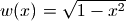:
>>> f = lambda x: chebyu(m,x)*chebyu(n,x)*sqrt(1-x**2) >>> m, n = 3, 4 >>> quad(f, [-1, 1]) 0.0 >>> m, n = 4, 4 >>> quad(f, [-1, 1]) 1.5707963267949
Jacobi polynomials¶
jacobi()¶
- mpmath.jacobi(n, a, b, z)¶
jacobi(n, a, b, x) evaluates the Jacobi polynomial 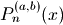. The Jacobi polynomials are a special case of the hypergeometric function given by:
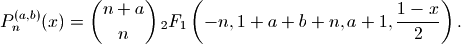
Note that this definition generalizes to nonintegral values of
. When is an integer, the hypergeometric series
terminates after a finite number of terms, giving
a polynomial in  .
.Evaluation of Jacobi polynomials
A special evaluation is 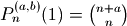:
>>> from mpmath import * >>> mp.dps = 15; mp.pretty = True >>> jacobi(4, 0.5, 0.25, 1) 2.4609375 >>> binomial(4+0.5, 4) 2.4609375
A Jacobi polynomial of degree
is equal to its
Taylor polynomial of degree . The explicit
coefficients of Jacobi polynomials can therefore
be recovered easily using taylor():>>> for n in range(5): ... nprint(taylor(lambda x: jacobi(n,1,2,x), 0, n)) ... [1.0] [-0.5, 2.5] [-0.75, -1.5, 5.25] [0.5, -3.5, -3.5, 10.5] [0.625, 2.5, -11.25, -7.5, 20.625]
For nonintegral
, the Jacobi “polynomial” is no longer
a polynomial:>>> nprint(taylor(lambda x: jacobi(0.5,1,2,x), 0, 4)) [0.309983, 1.84119, -1.26933, 1.26699, -1.34808]
Orthogonality
The Jacobi polynomials are orthogonal on the interval with respect to the weight function 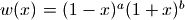. That is, 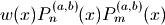 integrates to zero if and to a nonzero number if .
The orthogonality is easy to verify using numerical quadrature:
>>> P = jacobi >>> f = lambda x: (1-x)**a * (1+x)**b * P(m,a,b,x) * P(n,a,b,x) >>> a = 2 >>> b = 3 >>> m, n = 3, 4 >>> chop(quad(f, [-1, 1]), 1) 0.0 >>> m, n = 4, 4 >>> quad(f, [-1, 1]) 1.9047619047619
Differential equation
The Jacobi polynomials are solutions of the differential equation
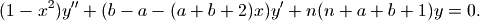
We can verify that jacobi() approximately satisfies this equation:
>>> from mpmath import * >>> mp.dps = 15 >>> a = 2.5 >>> b = 4 >>> n = 3 >>> y = lambda x: jacobi(n,a,b,x) >>> x = pi >>> A0 = n*(n+a+b+1)*y(x) >>> A1 = (b-a-(a+b+2)*x)*diff(y,x) >>> A2 = (1-x**2)*diff(y,x,2) >>> nprint(A2 + A1 + A0, 1) 4.0e-12
The difference of order 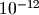 is as close to zero as it could be at 15-digit working precision, since the terms are large:
>>> A0, A1, A2 (26560.2328981879, -21503.7641037294, -5056.46879445852)
Gegenbauer polynomials¶
gegenbauer()¶
- mpmath.gegenbauer(n, a, z)¶
Evaluates the Gegenbauer polynomial, or ultraspherical polynomial,
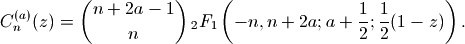
When
is a nonnegative integer, this formula gives a polynomial
in of degree , but all parameters are permitted to be
complex numbers. With 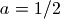, the Gegenbauer polynomial
reduces to a Legendre polynomial.Examples
Evaluation for arbitrary arguments:
>>> from mpmath import * >>> mp.dps = 25; mp.pretty = True >>> gegenbauer(3, 0.5, -10) -2485.0 >>> gegenbauer(1000, 10, 100) 3.012757178975667428359374e+2322 >>> gegenbauer(2+3j, -0.75, -1000j) (-5038991.358609026523401901 + 9414549.285447104177860806j)
Evaluation at negative integer orders:
>>> gegenbauer(-4, 2, 1.75) -1.0 >>> gegenbauer(-4, 3, 1.75) 0.0 >>> gegenbauer(-4, 2j, 1.75) 0.0 >>> gegenbauer(-7, 0.5, 3) 8989.0
The Gegenbauer polynomials solve the differential equation:
>>> n, a = 4.5, 1+2j >>> f = lambda z: gegenbauer(n, a, z) >>> for z in [0, 0.75, -0.5j]: ... chop((1-z**2)*diff(f,z,2) - (2*a+1)*z*diff(f,z) + n*(n+2*a)*f(z)) ... 0.0 0.0 0.0
The Gegenbauer polynomials have generating function 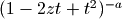:
>>> a, z = 2.5, 1 >>> taylor(lambda t: (1-2*z*t+t**2)**(-a), 0, 3) [1.0, 5.0, 15.0, 35.0] >>> [gegenbauer(n,a,z) for n in range(4)] [1.0, 5.0, 15.0, 35.0]
The Gegenbauer polynomials are orthogonal on with respect to the weight 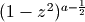:
>>> a, n, m = 2.5, 4, 5 >>> Cn = lambda z: gegenbauer(n, a, z, zeroprec=1000) >>> Cm = lambda z: gegenbauer(m, a, z, zeroprec=1000) >>> chop(quad(lambda z: Cn(z)*Cm(z)*(1-z**2)*(a-0.5), [-1, 1])) 0.0
Hermite polynomials¶
hermite()¶
- mpmath.hermite(n, z)¶
Evaluates the Hermite polynomial 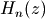, which may be defined using the recurrence
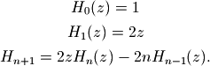
The Hermite polynomials are orthogonal on 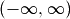 with respect to the weight 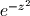. More generally, allowing arbitrary complex values of
, the Hermite function is defined as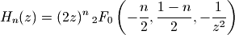
for , or generally
Examples
Evaluation for arbitrary arguments:
>>> from mpmath import * >>> mp.dps = 25; mp.pretty = True >>> hermite(0, 10) 1.0 >>> hermite(1, 10); hermite(2, 10) 20.0 398.0 >>> hermite(10000, 2) 4.950440066552087387515653e+19334 >>> hermite(3, -10**8) -7999999999999998800000000.0 >>> hermite(-3, -10**8) 1.675159751729877682920301e+4342944819032534 >>> hermite(2+3j, -1+2j) (-0.076521306029935133894219 - 0.1084662449961914580276007j)
Coefficients of the first few Hermite polynomials are:
>>> for n in range(7): ... chop(taylor(lambda z: hermite(n, z), 0, n)) ... [1.0] [0.0, 2.0] [-2.0, 0.0, 4.0] [0.0, -12.0, 0.0, 8.0] [12.0, 0.0, -48.0, 0.0, 16.0] [0.0, 120.0, 0.0, -160.0, 0.0, 32.0] [-120.0, 0.0, 720.0, 0.0, -480.0, 0.0, 64.0]
Values at
 :
:>>> for n in range(-5, 9): ... hermite(n, 0) ... 0.02769459142039868792653387 0.08333333333333333333333333 0.2215567313631895034122709 0.5 0.8862269254527580136490837 1.0 0.0 -2.0 0.0 12.0 0.0 -120.0 0.0 1680.0
Hermite functions satisfy the differential equation:
>>> n = 4 >>> f = lambda z: hermite(n, z) >>> z = 1.5 >>> chop(diff(f,z,2) - 2*z*diff(f,z) + 2*n*f(z)) 0.0
Verifying orthogonality:
>>> chop(quad(lambda t: hermite(2,t)*hermite(4,t)*exp(-t**2), [-inf,inf])) 0.0
Laguerre polynomials¶
laguerre()¶
- mpmath.laguerre(n, a, z)¶
Gives the generalized (associated) Laguerre polynomial, defined by
With and
a nonnegative integer, this reduces to an ordinary
Laguerre polynomial, the sequence of which begins
.The Laguerre polynomials are orthogonal with respect to the weight
 on .
on .Examples
Evaluation for arbitrary arguments:
>>> from mpmath import * >>> mp.dps = 25; mp.pretty = True >>> laguerre(5, 0, 0.25) 0.03726399739583333333333333 >>> laguerre(1+j, 0.5, 2+3j) (4.474921610704496808379097 - 11.02058050372068958069241j) >>> laguerre(2, 0, 10000) 49980001.0 >>> laguerre(2.5, 0, 10000) -9.327764910194842158583189e+4328
The first few Laguerre polynomials, normalized to have integer coefficients:
>>> for n in range(7): ... chop(taylor(lambda z: fac(n)*laguerre(n, 0, z), 0, n)) ... [1.0] [1.0, -1.0] [2.0, -4.0, 1.0] [6.0, -18.0, 9.0, -1.0] [24.0, -96.0, 72.0, -16.0, 1.0] [120.0, -600.0, 600.0, -200.0, 25.0, -1.0] [720.0, -4320.0, 5400.0, -2400.0, 450.0, -36.0, 1.0]
Verifying orthogonality:
>>> Lm = lambda t: laguerre(m,a,t) >>> Ln = lambda t: laguerre(n,a,t) >>> a, n, m = 2.5, 2, 3 >>> chop(quad(lambda t: exp(-t)*t**a*Lm(t)*Ln(t), [0,inf])) 0.0
Spherical harmonics¶
spherharm()¶
- mpmath.spherharm(l, m, theta, phi)¶
Evaluates the spherical harmonic ,
where is an associated Legendre function (see legenp()).
Here denotes the polar coordinate (ranging from the north pole to the south pole) and denotes the azimuthal coordinate on a sphere. Care should be used since many different conventions for spherical coordinate variables are used.
Usually spherical harmonics are considered for , , . More generally, are permitted to be complex numbers.
Note: spherharm() returns a complex number, even the value is purely real.
Examples
Some low-order spherical harmonics with reference values:
>>> from mpmath import * >>> mp.dps = 25; mp.pretty = True >>> theta = pi/4 >>> phi = pi/3 >>> spherharm(0,0,theta,phi); 0.5*sqrt(1/pi)*expj(0) (0.2820947917738781434740397 + 0.0j) (0.2820947917738781434740397 + 0.0j) >>> spherharm(1,-1,theta,phi); 0.5*sqrt(3/(2*pi))*expj(-phi)*sin(theta) (0.1221506279757299803965962 - 0.2115710938304086076055298j) (0.1221506279757299803965962 - 0.2115710938304086076055298j) >>> spherharm(1,0,theta,phi); 0.5*sqrt(3/pi)*cos(theta)*expj(0) (0.3454941494713354792652446 + 0.0j) (0.3454941494713354792652446 + 0.0j) >>> spherharm(1,1,theta,phi); -0.5*sqrt(3/(2*pi))*expj(phi)*sin(theta) (-0.1221506279757299803965962 - 0.2115710938304086076055298j) (-0.1221506279757299803965962 - 0.2115710938304086076055298j)
With the normalization convention used, the spherical harmonics are orthonormal on the unit sphere:
>>> sphere = [0,pi], [0,2*pi] >>> dS = lambda t,p: fp.sin(t) # differential element >>> Y1 = lambda t,p: fp.spherharm(l1,m1,t,p) >>> Y2 = lambda t,p: fp.conj(fp.spherharm(l2,m2,t,p)) >>> l1 = l2 = 3; m1 = m2 = 2 >>> print fp.quad(lambda t,p: Y1(t,p)*Y2(t,p)*dS(t,p), *sphere) (1+0j) >>> m2 = 1 # m1 != m2 >>> fp.chop(fp.quad(lambda t,p: Y1(t,p)*Y2(t,p)*dS(t,p), *sphere)) 0.0
Evaluation is accurate for large orders:
>>> spherharm(1000,750,0.5,0.25) (3.776445785304252879026585e-102 - 5.82441278771834794493484e-102j)
Evaluation works with complex parameter values:
>>> spherharm(1+j, 2j, 2+3j, -0.5j) (64.44922331113759992154992 + 1981.693919841408089681743j)